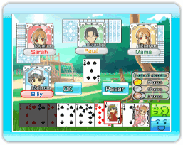

13 |
Reglas de Family Daifugo |
 |

El objetivo de cada partida es deshacerte de todas las cartas que tienes el primero, y ser el "Daifugo", es decir, "la persona más rica".
El primero obtendrá 2 puntos, el segundo recibirá 1 punto, y el tercero y cuarto 0 puntos.
Cuando dejes 4 cartas o más, crearás una "Revolución". Una vez creada una "Revolución", el valor de las cartas cambiará. (La carta más alta, el 2, será ahora la más baja y la más baja, el 3, la más alta.) ●Caída capital Si quien tiene el primer puesto en la partida previa no lo mantiene en la siguiente, caerá automáticamente al cuarto puesto en la próxima partida. ●Cortando ochos Si se usa un 8, solo o como parte de una combinación, puedes comenzar una nueva ronda, y el que haya dejado el 8 será quien reparta. ●Comodín Puedes usar un comodín (puede tener el valor de cualquier otra carta). ●3 de espadas El 3 de espadas puede vencer al comodín. Cuando esto ocurra, la ronda termina y quien tenga el 3 de espadas comienza otra ronda. ※Ustedes no pueden utilizar la “3 de espadas” cuando ustedes tienen una Revolución. ●Vínculo Si dos jugadores seguidos dejan cartas del mismo palo, el siguiente jugador solo puede dejar cartas de ese palo el resto de la ronda. Esto se denomina "Vínculo". ※Las reglas de "Vínculo" no se permiten durante los juegos de CWF de Nintendo. ●Pérdida por infracción Si ganas con un 2, un 8 o un comodín, sufrirás una "Pérdida por infracción". Aunque tengas parejas o más, si incluyen un 2, un 8 o un comodín, será una "Pérdida por infracción". ※Durante una "Revolución", jugar con un 3 supondrá una "Pérdida por infracción". |
 |
 |
 |